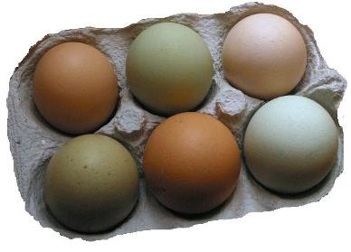

Los macronutrientes son aquellos que suministran la mayor parte de la energía al organismo. Los principales son carbohidratos, proteínas y grasas.
Los carbohidratos son saludables en todas sus formas y variedades. Son fundamentales para un buen funcionamiento intestinal y también son un importante combustible para el cerebro y los músculos activos. Son la fuente de energía de los seres vivos.
Los carbohidratos, también llamados glúcidos o hidratos de carbono, forman un grupo de nutrientes que encontramos fundamentalmente en alimentos de origen vegetal.
Algunos ejemplos son:
Este grupo de nutrientes tiene como función principal en nuestro organismo la energética, es decir, aportar la energía para que el organismo realice sus actividades cotidianas. Los podemos encontrar en una innumerable cantidad y variedad de alimentos y cumplen un rol muy importante en el metabolismo, por eso deben tener una presencia muy importante en nuestra alimentación diaria.
La fibra alimentaria es una mezcla de carbohidratos complejos y regula funciones intestinales. También aparece en las frutas, por tratarse de un alimento de origen vegetal.

El agua y la fibra alimentaria también forman parte de los alimentos y son fundamentales para el ser humano. Las fibras ayudan a que podamos movilizar el intestino sin dificultad, a regularizar el colesterol en nuestro organismo, e incluso se cree que ayudarían a disminuir la incidencia de cáncer intestinal, uno de los cánceres más frecuentes en nuestro país, entre otras funciones beneficiosas. Tomar mucha agua, hacer ejercicio y comer frutas y verduras ayuda a mover el intestino sin dificultad. Por eso se recomienda comer frutas, verduras, hortalizas, legumbres y cereales integrales que tienen un alto contenido de fibras.
Las proteínas son nutrientes básicos para la vida. Se encuentran principalmente en alimentos de origen animal y también, aunque con menor riqueza, en alimentos de origen vegetal.
Origen animal | Origen vegetal (legumbres) | Origen vegetal (cereales) |
|
|
|
Las proteínas están formadas por unas unidades básicas llamadas aminoácidos. En nuestro organismo las principales funciones son:

Las unidades básicas que forman la mayor parte de los lípidos son los ácidos grasos, triglicéridos y el colesterol. Entre las funciones de las grasas encontramos:

Prácticamente todos los alimentos contienen lípidos o grasas en mayor o menor proporción. Estos lípidos se diferencian entre sí por el tipo mayoritario de ácido graso que contienen. Dependiendo del tipo de ácido graso y su conformación, las grasas pueden ser de tres tipos y se absorben de diferente manera en nuestro organismo, y es muy importante saber reconocerlas, luego les contare por qué.
En los ácidos grasos existen 3 grandes grupos: las grasas insaturadas, las saturadas y las trans.

¿Por qué es importante saber que existen distintos grupos y qué alimentos constituyen esos grupos?
A medida que aumenta el contenido de grasas en la alimentación de las personas aumenta el número de personas obesas y a su vez el número de enfermedades como diabetes, hipertensión y otras enfermedades cardiovasculares muy graves, que son muy frecuentes hoy día en nuestro país.
¿Sabías que en nuestro país un 60% de las personas adulta padecen sobre peso/obesidad?
Cuando ingerimos grandes cantidades de grasas saturadas o trans, estamos aumentando la probabilidad de padecer enfermedades cardiovasculares así como de generar una enfermedad en las arterias de nuestro organismo que se denomina arterioesclerosis. Ésta es nada más y nada menos que el depósito de grasa en las paredes y luces de nuestras arterias, disminuyendo su calibre y aumentando el riesgo de que se ocluyan por completo, como por ejemplo sucede en las arterias del corazón, constituyendo los infartos.
Sintetizado por el organismo, pero también obtenido a partir de alimentos de origen animal, es una sustancia esencial para la vida. A modo de resumen existen dos tipos de colesterol: el colesterol LDL y el colesterol HDL.
El HDL es lo que muchas personas denominan colesterol “bueno”, pues este tipo de colesterol recoge las grasas que circulan por nuestro organismo y las devuelve al hígado, disminuyendo la posibilidad de que esas grasas se depositen en las arterias y las ocluyan. Entonces podríamos decir que una proporción elevada de HDL es protectora para nuestra salud cardiovascular. Este tipo de colesterol se obtiene principalmente de las grasas insaturadas.

El colesterol LDL, conocido como el colesterol “malo”, es el que se acumula en las arterias ocluyéndolas, teniendo un efecto contrario al colesterol HDL o “bueno”. Cuando consumimos grandes cantidades de grasas saturadas estamos aumentando nuestro colesterol malo o LDL y por ende estamos aumentado la probabilidad de padecer enfermedades cardiovasculares. Por tanto, el colesterol debe existir en nuestro organismo, aunque siempre en determinadas cantidades.